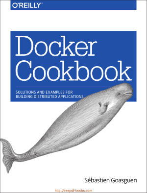
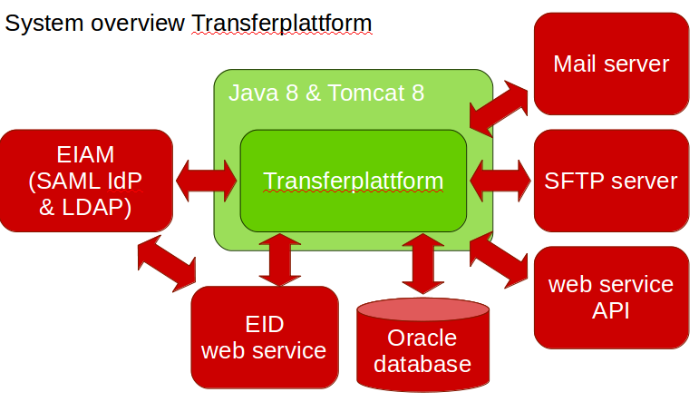
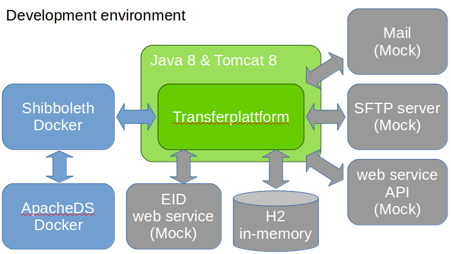
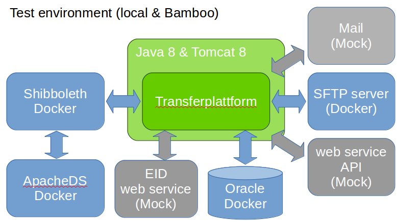
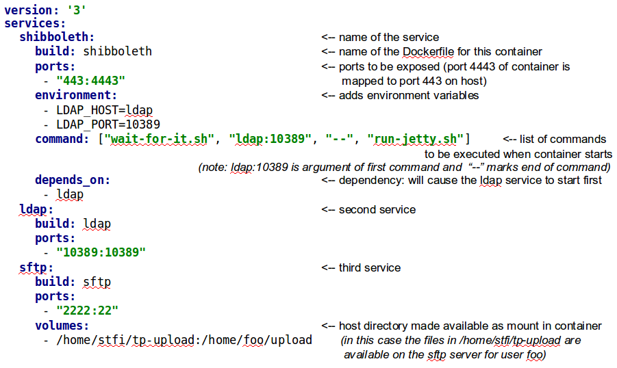
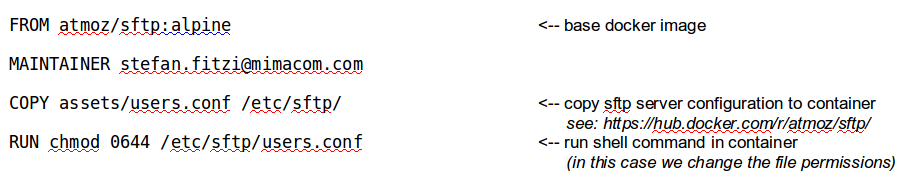

App Environment
from our "Wall of Pain":
"VM for all Apps in Support
-
in order to make sure that we have a running ENV for support"
Problems to be solved
- quick setup a working environment (bugfixing etc.)
- up-to-date documentation of the dev environment
- not messing up my own PC
- independence of mimacom servers (slow VPN)
- quick testing with restoring original situation
What has changed since last presentation?
- 80/20: 80% solution, but easier
- using Docker and docker-compose instead of Vagrant, Ansible etc...
- Ansible can be still helpful as "scripting solution"
- not only for development environment, but also for testing etc.
Get familiar with Docker
Get familiar with Docker
- Book download: http://freepdf-books.com/docker-cookbook/
- Going through chapter 1 will take you 1-2 hours
- not much reading
- small examples → play them through yourself
What we needed for project
services to run the application
What we needed for project
during development
What we needed for project
for testing
Three steps
- Define the services that make up your app in
docker-compose.ymlso they can be run together in an isolated environment. - Search for an appropriate base image (e.g. at https://hub.docker.com) and “refine” it with a
Dockerfile. - Lastly, run
docker-compose upand Compose will start and run your entire app.
Example- SAML IdP & SFTP server
Define the Dockerfiles
Dockerfile for sftp server
Define the Dockerfiles
Dockerfile for Shibboleth server

Links to documentation
docker-compose: https://docs.docker.com/compose/compose-file/Dockerfile: https://docs.docker.com/engine/reference/builder/
about add / copy: https://docs.docker.com/engine/userguide/eng-image/dockerfile_best-practices/#add-or-copy